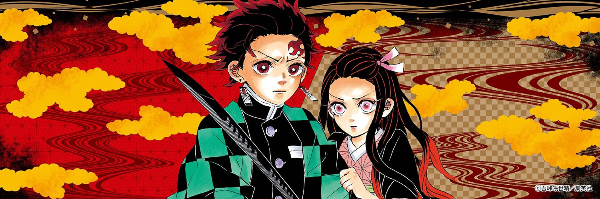

鬼滅の刃について
鬼滅の刃とは、吾峠呼世晴による漫画作品です。
『週刊少年ジャンプ』(集英社)にて2016年11号から2020年24号まで連載。略称は「鬼滅」。
日本の大正時代を舞台に、主人公の少年が鬼と化した妹を人間に戻すために鬼たちと戦う姿を描く、和風の剣戟奇譚。
2019年にはufotable制作でテレビアニメ化され、物語の序章を描く第一期『竈門炭治郎 立志編』が放送された。
2020年には物語の中盤を描く劇場アニメ『無限列車編』が公開された。同作品の日本国内での興行収入は403.2億円に達し、日本歴代興行収入第1位となった。

あらすじ
舞台となるのは大正時代。主人公となる竈門炭治郎（かまどたんじろう）は一家の長男として家族と共に幸せに暮らしていました。ある日、炭治郎いつも通り炭売りから戻ると、家族は「鬼」に惨殺され、唯一生き残った妹の禰豆子（ねずこ）は鬼に…！そんな禰豆子を救うため、家族の仇を打つために炭治郎が鬼狩りとなっていく様を描いている作品です。
公式Twitter
テレビアニメ「鬼滅の刃」無限列車編 10月10日（日）より、遊郭編 12月5日（日）より放送決定。
— 鬼滅の刃公式 (@kimetsu_off) September 25, 2021
主題歌アーティスト、無限列車編：LiSA、遊郭編：Aimer。
上弦の陸・堕姫役CV 沢城みゆき。
新情報・新映像満載の最新PVを公開致しました。https://t.co/fpy9Fm1s22 #鬼滅の刃 pic.twitter.com/XE5DfQ8HET